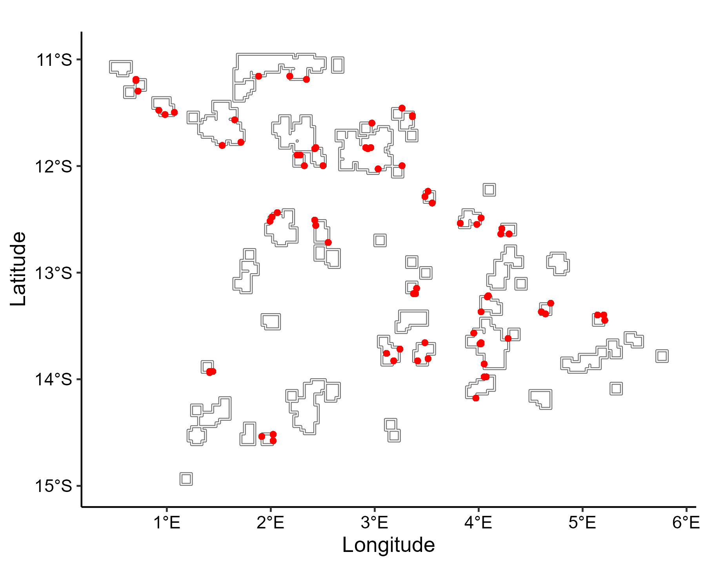

Generate sampling design
generate_sampling_design.RmdThe final step is to generate the sampling design that underpins the
monitoring program. In synthos, the design parameters are
organized into two complementary components:
- Large-scale design: locates sites within reefs selected across the
spatial domain and creates unevenly repeated surveys when random site
allocation is selected.
- Fine-scale design: specifies the sampling hierarchy within each site, including transects, photo frames, and points for point-based data, as well as quadrats for cover data.
Both components can be easily customised through the function generateSettings, allowing users to tailor the sampling design to their specific monitoring aspirations.
The synthos table is then generated including the
selection of surveyed reefs and primary metadata. It summarizes the data
at the transect scale by summing the number of count in point-based
observation data and averaging cover at the quadrat-level.
The table includes the following:
| Variable | Description |
|---|---|
survey_depth |
Depth in metres. |
project_name |
Name of the monitoring program. |
site_name |
Combined reef–site identifier. |
survey_transect_number |
Transect number within a site. |
site_latitude, site_longitude
|
Geographic coordinates of a site. |
survey_start_date |
Survey date and time (year/month/day/hour). |
point_machine_classification |
Benthic community class for each annotation point. |
COUNT_TRUE |
“True” number of counts available for every reef across the spatial domain. |
TOTAL |
Total number of annotation points. |
COVER_TRUE |
“True” percent cover available for every reef across the spatial domain. |
year |
Year extracted from survey_start_date. |
reef |
Reef extracted from site_name. |
site |
Site extracted from site_name. |
COUNT |
Number of counts for selected reefs only (NA for non-selected reefs). |
COVER |
Percent cover for selected reefs only (NA for non-selected reefs). |
1. Generate settings
surveys <- "random" # or "fixed"
data_type <- "points" # or "cover"
synthos::generateSettings(nreefs = 25, nsites = 3, nyears = 15, dhw_eff = 0.5, cyc_eff = 0.3, other_eff = 0.2)2. Generate sampling design
benthos_reefs_pts <- synthos::create_synthetic_reef_landscape(spatial_grid, config_sp)
if (surveys == "fixed") {
locs_sf <- synthos::sampling_design_large_scale_fixed(
benthos_reefs_pts, config_lrge
)
obs <- synthos::sampling_design_fine_scale_fixed(
locs_sf, config_fine
)
} else if (surveys == "random") {
locs_sf <- synthos::sampling_design_large_scale_random(
benthos_reefs_pts, config_lrge
)
obs <- synthos::sampling_design_fine_scale_random(
locs_sf, config_fine
)
} else {
stop("surveys must be 'fixed' or 'random'.")
}
if (data_type == "points") {
pts <- synthos::sampling_design_fine_scale_points(obs, config_pt)
synthos_data <- synthos::prepare_table(pts)
} else if (data_type == "cover") {
cov <- synthos::sampling_design_fine_scale_cover(obs, config_pt)
synthos_data <- synthos::prepare_table(cov)
} else {
stop("data_type must be 'points' or 'cover'.")
}3. Vizualisation
X_sf <- synthos_data %>%
filter(!is.na(COUNT)) %>%
st_as_sf(coords = c("site_longitude", "site_latitude"),
crs = st_crs(4326))
ggplot() +
geom_sf(data = reefs.sf$simulated_reefs_sf, fill = "gray95") +
geom_sf(data = X_sf, col = "red", size = 1.2) +
xlab("Longitude") + ylab("Latitude") +
coord_sf(crs = 4326) +
theme_pubr() +
theme(
axis.title = element_text(size = 13),
axis.text = element_text(size = 11)
)